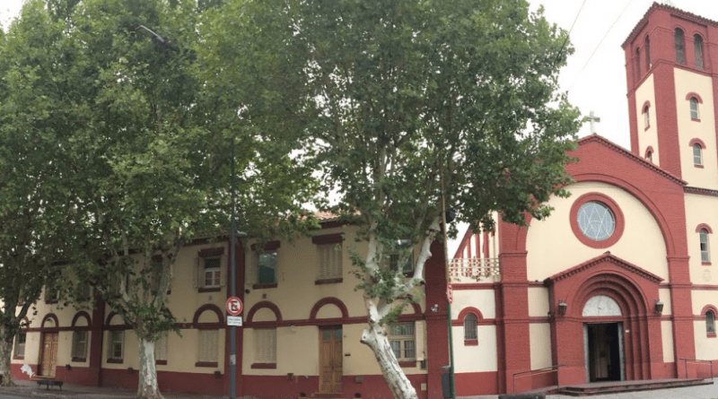
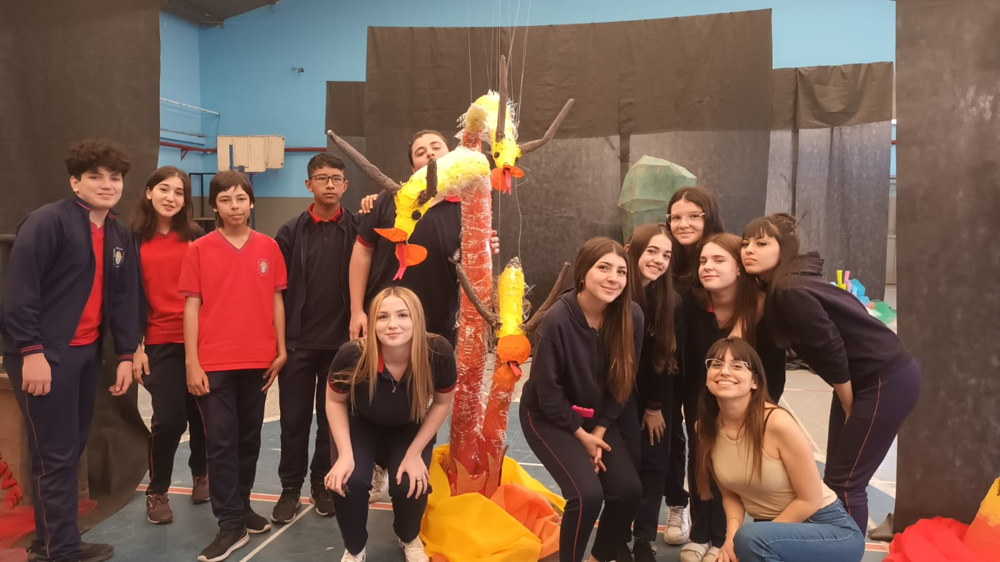
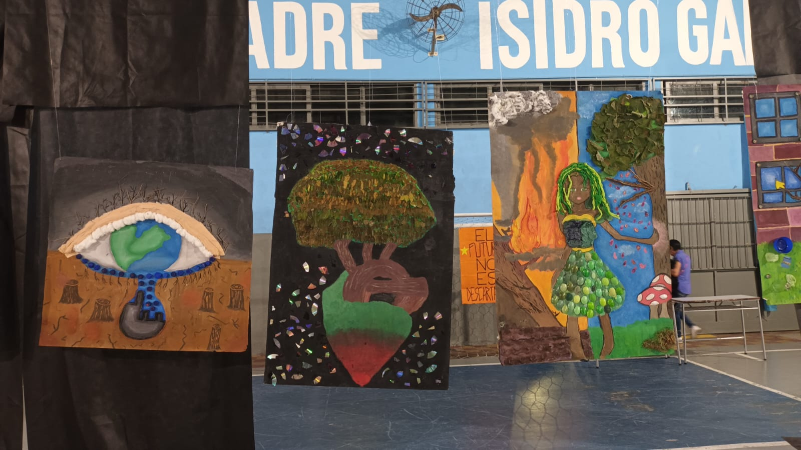
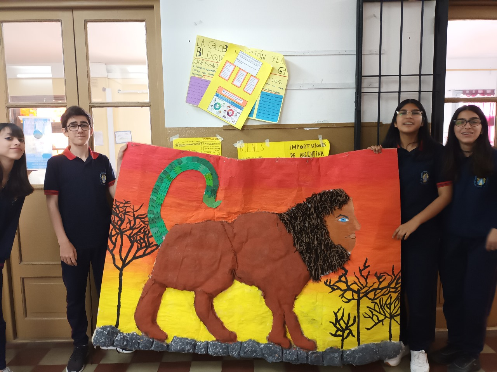

¿De qué trata?
Artes visuales es una de las tres orientaciones que ofrece el Instituto Nuestra Señora de Luján de los Patriotas en su nivel medio. Brinda a los alumnos experiencias y herramientas que ayudan a desarrollar su creatividad, promueven el trabajo en equipo y ayudan a tener una visión criteriosa y estética de los proyectos realizados.


¿Cuáles son los objetivos?
Tiene como objetivo proporcionar herramientas de expresión de ideas y sentimientos de manera visual a los estudiantes mediante:
- Desarrollar la creatividad
- Fomentar la observación y la percepción
- Estimular el pensamiento crítico
- Promover la expresión
¿Qué contenidos y actividades voy a realizar?
Las actividades y contenidos de esta rama son tanto prácticos como teóricos:
- Técnicas de dibujo y pintura
- Historia del arte
- Fotografía y medios digitales
- Crítica y análisis del arte


¿Qué materias voy a tener?
- Taller de artes
- Lenguajes artísticos combinados
- Arte en su contexto histórico
- Artes visuales y multimedia
- Arte cultura y sociedad
- Arte público
- Producción Artística